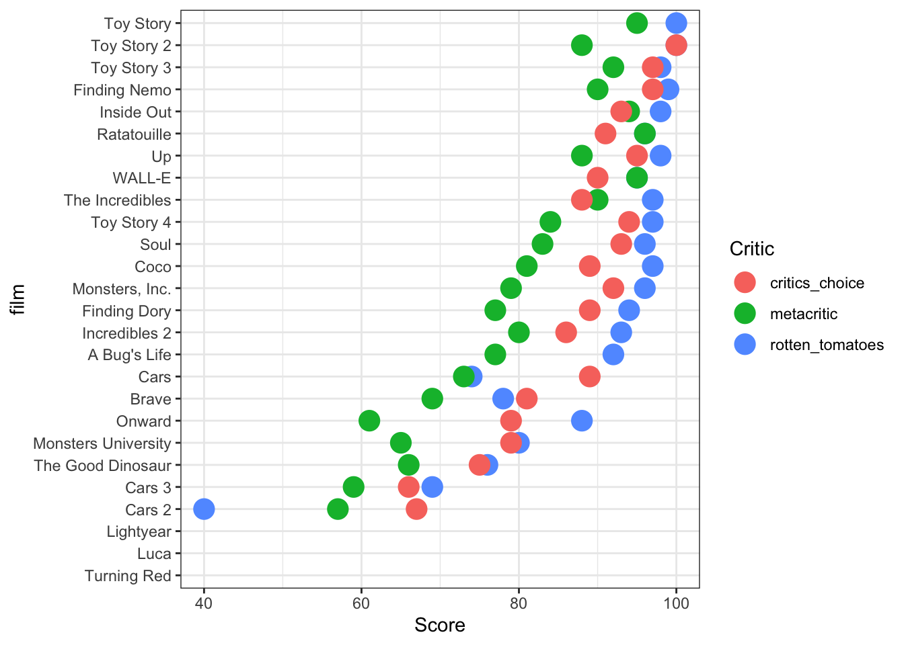
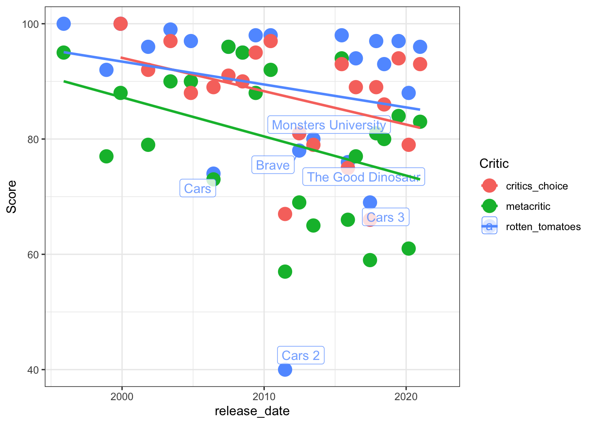

For the screencast itself, check the canvas course for the zoom recording for April 15.
This script originated as the code from the screencast during class, and was edited for clarity afterwards. The figure captions were similarly added afterwards.
all variables have the correct type (dates, factors, numbers, …), and
missing values are encoded as NA
head(pixar_films)
# A tibble: 6 × 5
number film release_date run_time film_rating
<dbl> <chr> <date> <dbl> <chr>
1 1 Toy Story 1995-11-22 81 G
2 2 A Bug's Life 1998-11-25 95 G
3 3 Toy Story 2 1999-11-24 92 G
4 4 Monsters, Inc. 2001-11-02 92 G
5 5 Finding Nemo 2003-05-30 100 G
6 6 The Incredibles 2004-11-05 115 PG
summary(pixar_films)
number film release_date run_time
Min. : 1.0 Length:27 Min. :1995-11-22 Min. : 81.0
1st Qu.: 7.5 Class :character 1st Qu.:2006-12-18 1st Qu.: 95.0
Median :14.0 Mode :character Median :2013-06-21 Median :100.0
Mean :14.0 Mean :2012-06-15 Mean :104.8
3rd Qu.:20.5 3rd Qu.:2018-12-17 3rd Qu.:106.0
Max. :27.0 Max. :2023-06-16 Max. :155.0
NA's :2
film_rating
Length:27
Class :character
Mode :character
Fix some of the encoding for missing values and introduce factor variables. Remove the movie that doesn’t have a title.
Now we do the same kind of inspection for the scores. Scores for movies 25 through 27 are missing, and some of the scores are missing throughout.
head(public_response)
# A tibble: 6 × 5
film rotten_tomatoes metacritic cinema_score critics_choice
<chr> <dbl> <dbl> <chr> <dbl>
1 Toy Story 100 95 A NA
2 A Bug's Life 92 77 A NA
3 Toy Story 2 100 88 A+ 100
4 Monsters, Inc. 96 79 A+ 92
5 Finding Nemo 99 90 A+ 97
6 The Incredibles 97 90 A+ 88
tail(public_response)
# A tibble: 6 × 5
film rotten_tomatoes metacritic cinema_score critics_choice
<chr> <dbl> <dbl> <chr> <dbl>
1 Coco 97 81 A+ 89
2 Incredibles 2 93 80 A+ 86
3 Toy Story 4 97 84 A 94
4 Onward 88 61 A- 79
5 Soul 96 83 <NA> 93
6 Luca NA NA <NA> NA
public_response %>%count(cinema_score)
# A tibble: 4 × 2
cinema_score n
<chr> <int>
1 A 13
2 A+ 7
3 A- 2
4 <NA> 2
Based on Figure 1, we see that the Toy Story and Toy Story 2 have the highest ratings based on rotten tomatoes and critics choice. Ratatouille is the movie with the highest rating from metacritic. Cars 2 is the movie with the lowest ratings from rotten tomoatoes and metacritic. The worst movie award from critics choice goes to Cars 3.
Warning: Removed 11 rows containing missing values or values outside the scale range
(`geom_point()`).

Figure 1: Scatterplot of Pixar movies (y-axis) by scores (x-axis) from three different rating sources (critics choice, rotten tomatoes and metacritic). Movies are order by their average score from best (top) to worst (bottom). The scores between the critics are quite consistent, in particular for movies with very high ratings. Generally, rotten tomatoes has the highest score, followed by critics choice and metacritics. When score get lower, the gap between rotten tomatoes and critics choice tends to be lower, and for some movies the order is flipped (e.g. Brave, Cars, and Cars 2). Meta critic has higher scores than critics for Ratatouille and Wall-E
pixar_long %>%filter(Score >99)
# A tibble: 3 × 8
number film release_date run_time film_rating cinema_score Critic Score
<dbl> <fct> <date> <dbl> <fct> <fct> <chr> <dbl>
1 1 Toy Story 1995-11-22 81 G A rotte… 100
2 3 Toy Story 2 1999-11-24 92 G A+ rotte… 100
3 3 Toy Story 2 1999-11-24 92 G A+ criti… 100
# wish: add names on the right
Thing 3: scores over time
Figure 2 shows pixar movie ratings over time. Since the first release of Toy Story, audiences and film reviewers have become more critical and ratings have generally declined. A logical next step would be to see whether the dip in ratings between 2011 and 2016 is associated with some producer or director at pixar.
Warning: Removed 11 rows containing non-finite outside the scale range
(`stat_smooth()`).
Warning: Removed 11 rows containing missing values or values outside the scale range
(`geom_point()`).

Figure 2: Scatterplot of scores (y-axis) by release date (x-axis). Each of the dots corresponds to one pixar movie with one of three critic scores (color). We see that over time scores for pixar movies have decreased (trend lines). Particularly, between 2012 and 2015 scores from any source did not make it (much) above 80. Since 2016, scores are much higher again. All movies with a rotten tomatoes rating of below 85 are labelled.
Extra Credit :)
The package pixarfilms has an additional dataset on people in different roles involved in each movie.
We will load that information into the pixar_long form, and see whether there is some association with the dip in ratings
library(pixarfilms)head(pixar_people)
# A tibble: 6 × 3
film role_type name
<chr> <chr> <chr>
1 Toy Story Director John Lasseter
2 Toy Story Screenwriter Joel Cohen
3 Toy Story Screenwriter Alec Sokolow
4 Toy Story Screenwriter Andrew Stanton
5 Toy Story Screenwriter Joss Whedon
6 Toy Story Storywriter Pete Docter
Figure 3: Scatterplot of individuals (y-axis) involved in the making of a movie by release date (x-axis). Each point corresponds to an individual’s involvement in a particular role for a movie. Individuals are ordered according to the date of the their involvement. Some individuals (like John Lasseter and Andrew Stanton have been involved from the beginning and are still involved in various roles now). It seems that new directors first take on the role of co-director, before moving to the rolw of director. Similarly, story writers start out as screen writers. Purple points indicate a dual role of screen and story writing. The vertical lines indicate the movies Cars, Cars 2, and Cars 3.
Figure 3 shows a plot of individuals involved in the making of pixar films. Various patterns become obvious: For writers (story and screen), there is a strong core of individuals who have been involved in the writing since the beginning. In terms of the musical arrangements, we see a lot of stability: Randy Newman has been taking turns with Thomas Newman in composing the music, Michael Giacchino has been involved as a composer for a lot of the pixar movies.